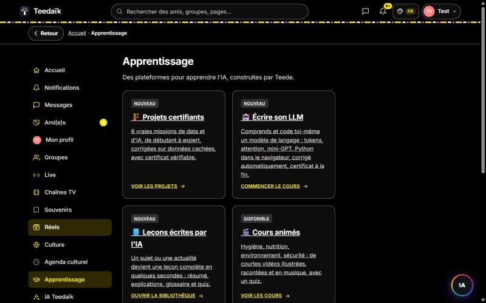
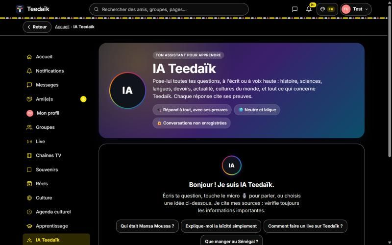

Points clés
- Next.js, React, TypeScript, PostgreSQL (Neon), Vercel
- Mots de passe Argon2id, double authentification TOTP, sessions révocables
- Limitation de débit, bouclier anti-intrusion, anti-VPN sur les actions sensibles
- RGPD : consentements, export et effacement des données
Aperçu


Auteur
Teede Augustin NOUDAMADJO, Data Scientist Junior à Lyon. Retrouvez la documentation complète, le code et la vidéo de démonstration sur GitHub.